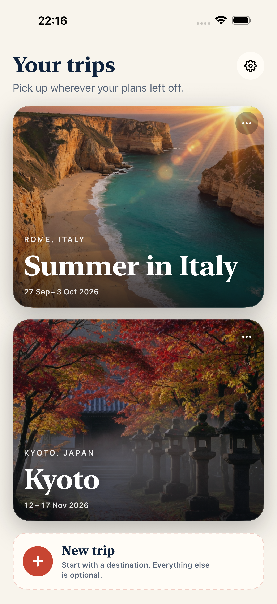
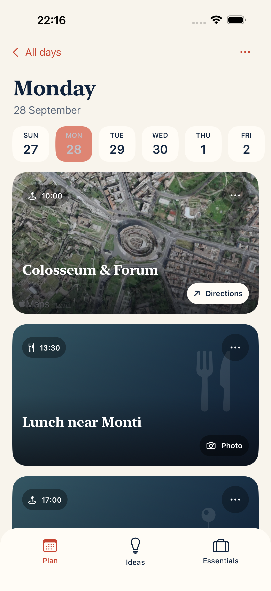
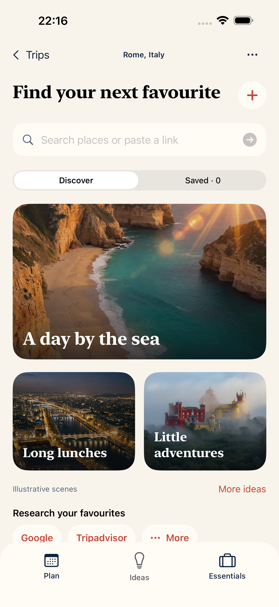
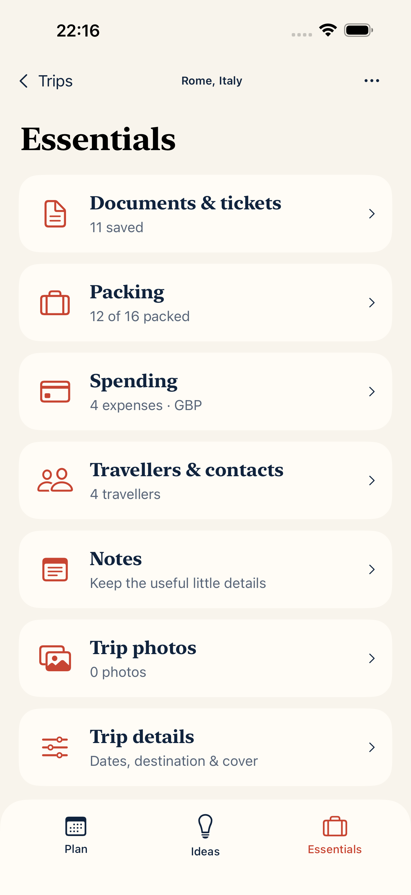
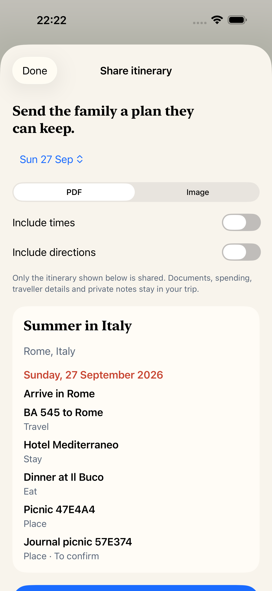
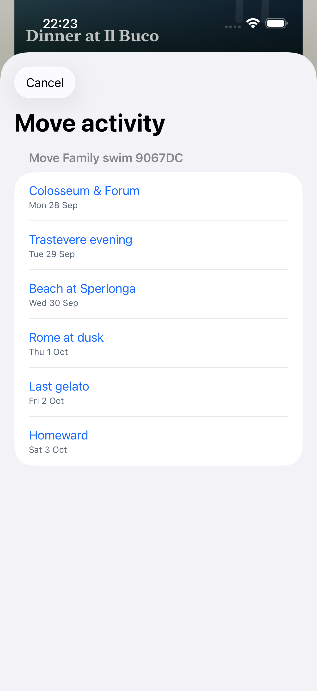

Switch days by tapping their dates. Add places, meals, stays and travel, with a photo or map to bring each activity into view.
Private TestFlight
The journal update
Make room for the journey.
Start with a shelf of photo-covered trips. Open one to shape each day in Plan, collect possibilities in Ideas and keep the practical details close in Essentials.
Planned App Store price: £3.99, paid once. No subscription. TestFlight remains free during testing; public release is still being prepared.
Unlimited local tripsNo account requirediPhone · iOS 18+


A journal for every journey
Your plans, with a sense of place.
Warm ivory pages, coral details and serif titles make space for your photos and plans. Tap a date to change days, open an activity for its details and move between Plan, Ideas and Essentials.


Genuine app screenshots with example trip data. This gallery previews the journal update being prepared for TestFlight; features depend on your installed build.
Little details, easier days
Keep the plan flexible.
Move or copy an activity to another day with its photo. Share a selected day as images, or choose a day or the whole itinerary as a PDF. Preview the result, choose whether to include times, directions and the cover photo, then select where to send it.


Plan · Ideas · Essentials
A place for the possibilities and the practicalities.
Search Apple Maps, add a manual idea or save an HTTPS link. Choose an optional photo, then decide when the idea belongs on your plan. Manual planning works offline.
Choose Travel Plans in the iPhone share sheet, edit the link title and choose a trip. Open Travel Plans and confirm the import into Ideas. Saving the link does not fetch or scan the page.
Keep packing, spending, documents, travellers, notes and photos in Essentials. Track amounts and due dates in your chosen currency.
Open a saved website, directions or an external research link only when you choose it. Check opening times, accessibility, reservations and photo rights with the source.
Preview a selected itinerary PDF or day images before using Apple’s share sheet. Full trip backups are a separate export and can include private documents.
Local-first by design
Your plans stay yours.
Unlimited local trips, stored privately on your iPhone. There is no Travel Plans account, advertising profile or analytics SDK. Booking files stay on your device unless you choose optional iCloud Drive storage.
Privacy at a glance
- Trip facts stay on this device; trip sync is off
- No account or Sign in with Apple required
- No advertising or analytics SDK
- Optional iCloud Drive is only for booking files
- Sharing starts with your choice and a preview
- Complete trip backups include attachments and restore as new copies
- An unreadable database is preserved; the app stops rather than replacing it
One active travel planner
Let’s Build Travel Plans.
This is our active, private, local-first iPhone planner. The older Travel Plans and Family Trips beta apps retired on 9 September 2026. Their existing data is not automatically moved into this app.
Where will your next chapter take you?
Travel Plans is in private TestFlight, with the journal update in preparation. Request access to join testing. We review requests before inviting testers.